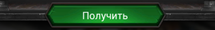

from sikuli import * from java.lang import System import random import math screenParts = [Region(1,1,2,3), Region(5,1,2,3), Region(9,1,2,3), Region(1,6,2,3), Region(9,6,2,3), Region(1,11,2,3), Region(5,11,2,3), Region(8,11,2,3)] def pointRnd(region): W = region.getW() H = region.getH() dx = random.randint(-W/5, W/5) dy = random.randint(-H/5, H/5) loc = Location(region.getCenter().offset(dx, dy)) return loc def sleepRnd(maxMs): print "common.sleepRnd call Max duration:", maxMs ms = random.randint(0, maxMs) #time delay sleep(ms/1000) def clickRnd(region): Debug.log(1, "CALL common.clickRnd region: %1$s", region) sleepRnd(500) region.click( pointRnd(region) ) def clickImagesRnd(owner, images): for i in images: clickRnd( owner.wait(i, 20) ) def clickBack(): print "common.clickBack call" click() def clickBackN(num): Debug.log(1, "CALL common.clickBackN Count: %1$s", num) for i in range(0, num): sleepRnd(500) clickBack() def clickPersonRnd(owner): Debug.log(1, "CALL common.clickPersonRnd") reg = Region(owner.getX(), owner.getY(), owner.getW()/6, owner.getW()/6) reg.highlight(1) clickRnd(reg) def distance(point1, point2): return math.sqrt( (point1.x-point2.x) * (point1.x-point2.x) + (point1.y-point2.y) * (point1.y-point2.y) ) def screenPartToRegion(region, part_idx): print "CALL common.screenPartToRegion", region, part_idx slice_W = region.w // 12 slice_H = region.h // 15 print "Slices", slice_W, slice_H part = screenParts[part_idx] out_reg = Region(part.x * slice_W, part.y * slice_H, slice_W * 2, slice_H * 3) print "out_reg", out_reg shifted = out_reg.offset( region.getTopLeft() ) print "shifted", shifted return shifted def findOneOf(region, images): Debug.log(1, "CALL common.findOneOf") for i in images: res = region.exists(i, 2) if res: print "common.findOneOf finished. Found image:", i, res return res print "common.findOneOf finished. No images found" return None def closePopups(region): Debug.log(1, "CALL common.closePopups") while True: gift = region.exists(, 1) if gift: Debug.log(1, "Gift popup found. Closing..") clickRnd( gift.find() ) sleep(2) clickRnd( region.find() ) Debug.log(1, "Gift popup is closed.") continue levelup = region.exists(, 1) if levelup: Debug.log(1, "LevelUp popup found. Closing..") clickRnd( levelup.find() ) continue if not findOneOf(region, [, ]): Debug.log(1, "Another single popup found. Closing..") return() else: clickBack() sleep(2) def backToNormalView(region): Debug.log(1, "CALL common.backToNormalView") closePopups(region) patt = Pattern().similar(0.95) while not region.exists(patt, 4): clickBack() sleepRnd(2000) print "common.backToNormalView finished" def coordInList(coord_list, coord): for c in coord_list: if distance(c, coord) < 10: return True return False def shiftCoords(coords, shift): result = [] for c in coords: result.append( Location(c.x + shift.x, c.y + shift.y) ) return result def slowDragDrop(region, beg_point, end_point): print "CALL common.slowDragDrop. Beg point:", beg_point, "End point:", end_point mmd = Settings.MoveMouseDelay # save default/actual value Settings.MoveMouseDelay = 1 region.dragDrop(beg_point, end_point) Settings.MoveMouseDelay = mmd def moveToCenter(region, tile): Debug.log(1, "CALL common.moveToCenter %1$s", tile) beg_point = pointRnd(tile) end_point = pointRnd(Region(region.getCenter().x-25, region.getCenter().y-25, 50, 50)) slowDragDrop(region, beg_point, end_point) print "common.moveToCenter finished" return tile.offset(end_point.x - beg_point.x, end_point.y - beg_point.y) def precise(image): patt = Pattern(image) return patt.similar(0.95)